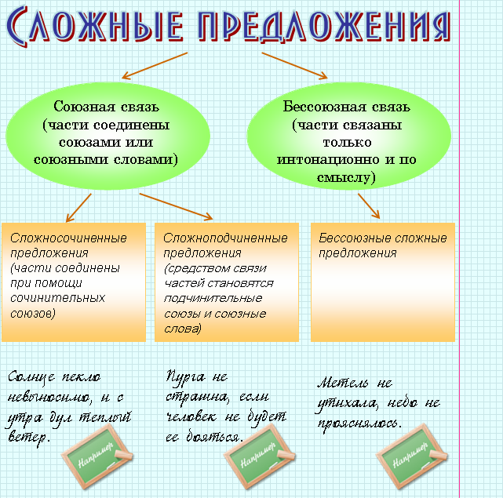

|
Сложными называются предложения, состоящие из двух или более простых, объединенных по смыслу, интонационно и грамматически. |
 |
Таким образом, главным признаком сложного предложения является наличие в нем двух или более грамматических основ. Простые предложения, объединяясь в сложные, утрачивают самостоятельность и интонацию конца предложения. |
 |
Пошел дождь. (Простое предложение). Пошел дождь, и нам пришлось вернуться домой. (Сложное предложение). |

 |
Сложносочиненные
предложения с соединительными
союзами Сложносочиненные предложения с противительными союзами Сложносочиненные предложения с разделительными союзами |
|
Все
проходит, да не все забывается. (Значение противопоставления). В нашем классе двадцать пять учеников, а вашем всего двадцать. (Значение сопоставления). Только песне нужна красота, красоте же и песни не надо. (Использование частицы же в роли противительного союза). |